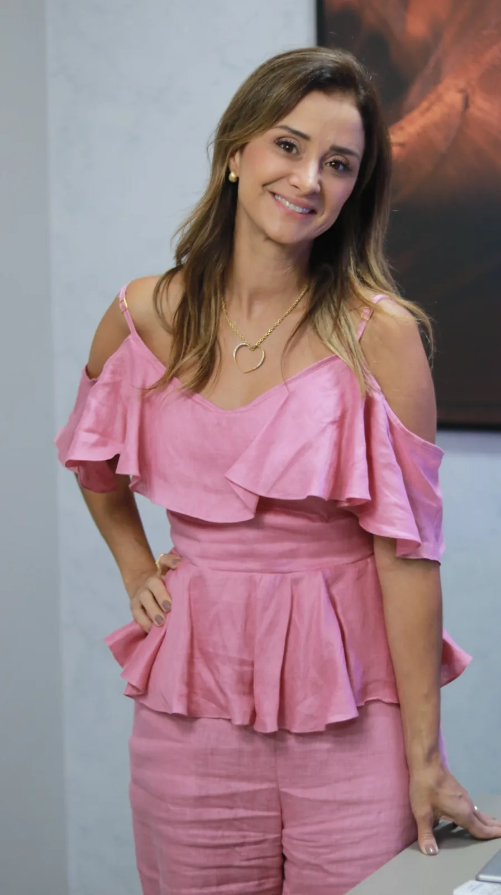
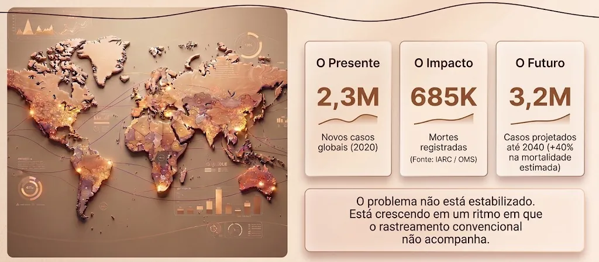
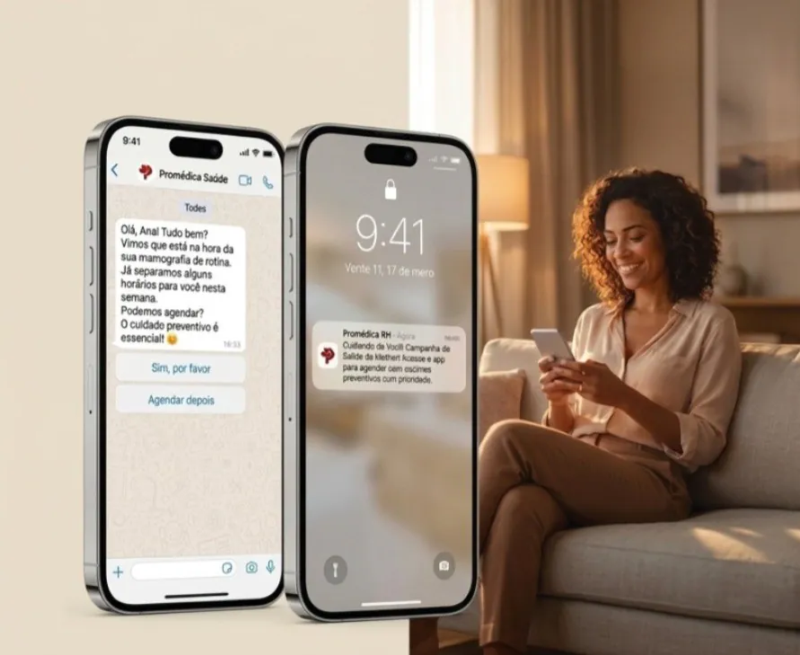
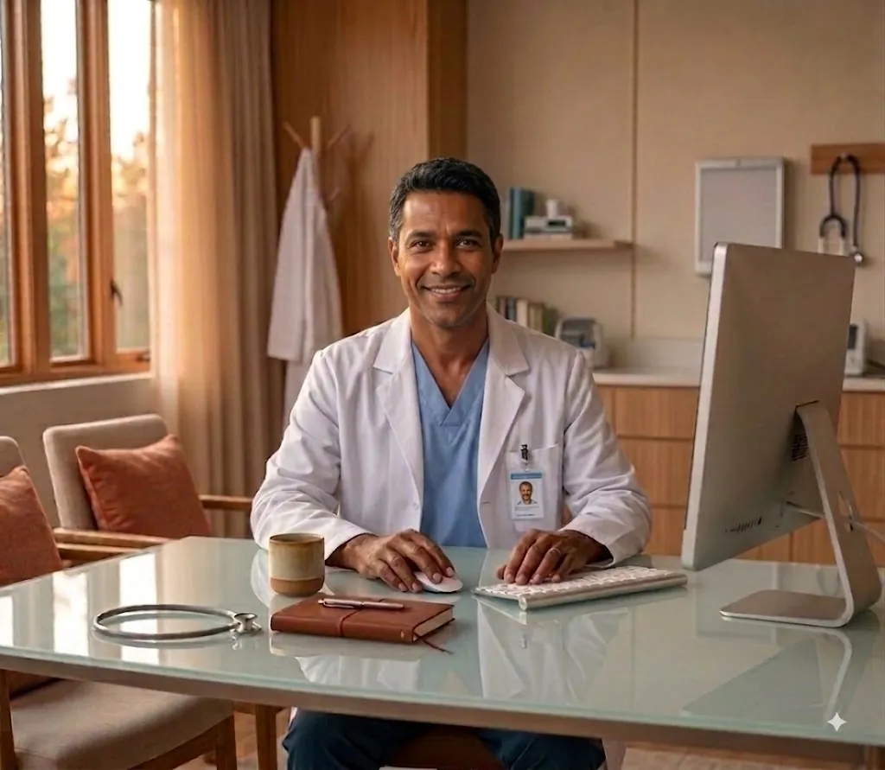
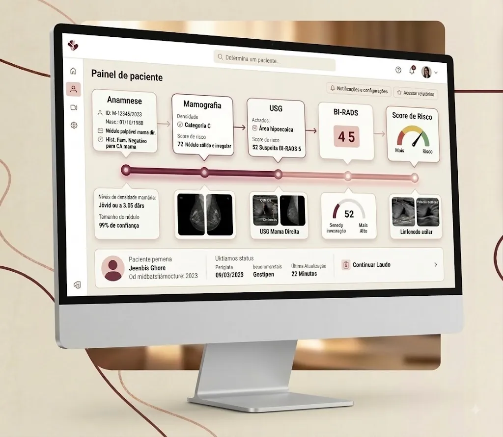
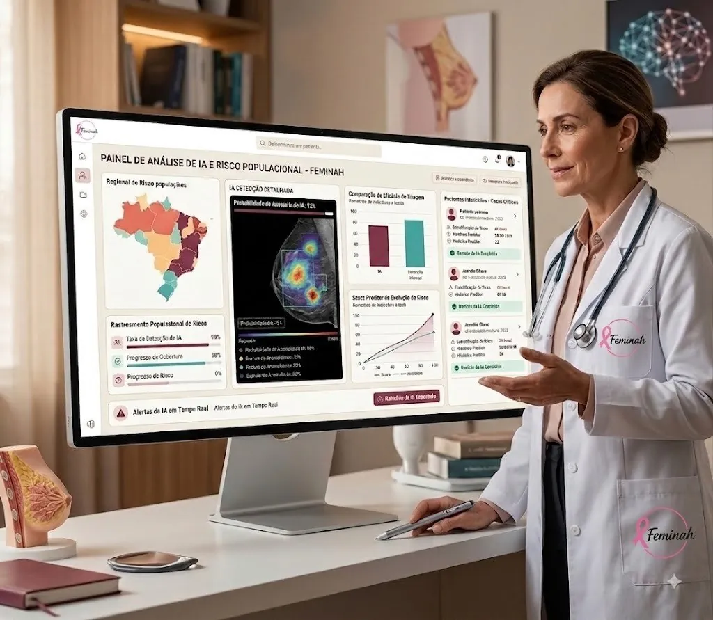
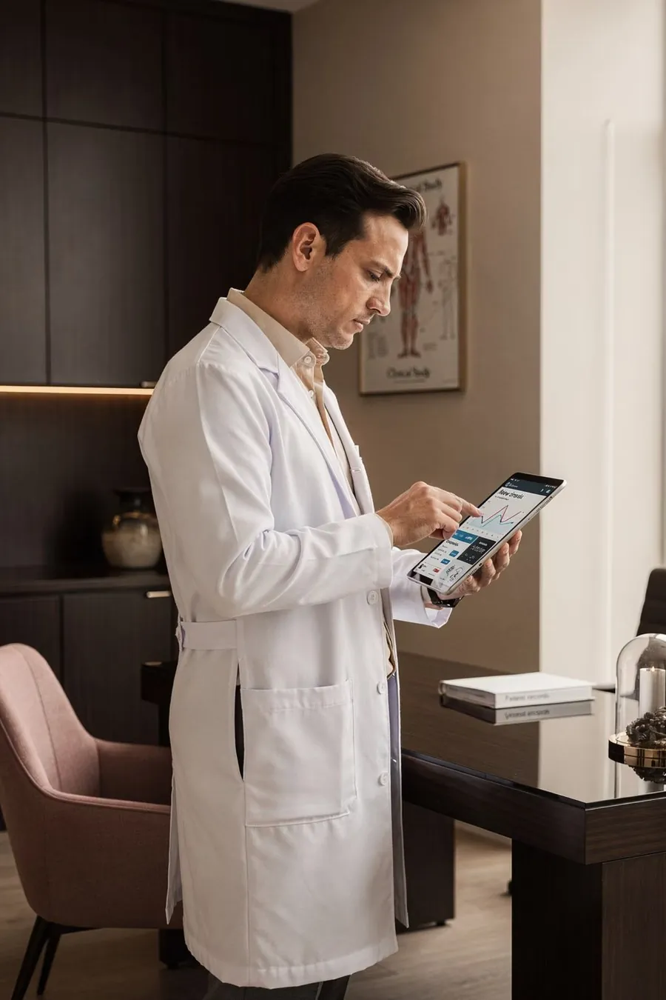
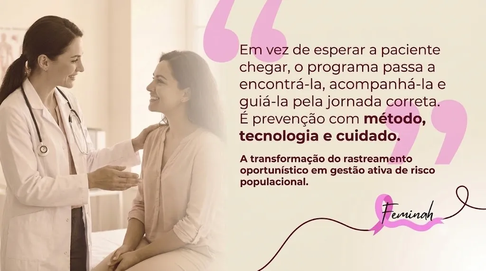

01
LEI FEDERAL Nº 14.450/2022
Programa Nacional de Navegação de Pacientes
Cria o Programa Nacional de Navegação de Pacientes para pessoas com neoplasia maligna de mama, reforçando o acompanhamento da paciente ao longo do diagnóstico e do tratamento.
Tecnologia, inteligência clínica e cuidado para transformar o rastreamento em uma jornada organizada, ativa e acompanhada.

Especialista em Mastologia e Mamografia, com mais de 20 anos de experiência em Mastologia Clínica, Cirúrgica, Reconstrução Mamária e Diagnóstico por Imagem da Mama, com título de especialista pela SBM e CBR.
Idealizadora do Programa de Rastreamento Inteligente da Feminah, atua também na implantação e organização de programas de rastreamento do câncer de mama, com experiência nos sistemas público e privado, integrando prevenção, diagnóstico precoce e acompanhamento da jornada da paciente.
Sua atuação reúne experiência clínica, cirúrgica e em imagem, com uma visão de cuidado integral baseada em segurança técnica, organização assistencial e acolhimento.
A Feminah desenvolveu uma metodologia que integra tecnologia, inteligência clínica, gestão populacional, navegação assistencial e inteligência artificial para organizar linhas completas de cuidado em saúde da mulher.
Nossa missão é transformar programas preventivos em jornadas inteligentes, rastreáveis e orientadas por dados — garantindo que cada mulher complete sua jornada assistencial com segurança e continuidade. Essa atuação encontra respaldo direto na Lei Federal nº 14.450/2022, que criou o Programa Nacional de Navegação de Pacientes para Pessoas com Neoplasia Maligna de Mama.
Não entregamos apenas tecnologia. Entregamos gestão inteligente da prevenção — combinando método, acompanhamento, governança e informação para apoiar uma linha de cuidado mais contínua e organizada.
“Mais do que tecnologia, entregamos gestão inteligente do cuidado.”
O avanço da gestão populacional, da medicina baseada em valor e da transformação digital exige programas capazes de acompanhar pessoas — e não apenas registrar procedimentos.
Além da relevância epidemiológica, o rastreamento organizado ganha ainda mais importância diante de marcos que reforçam a navegação da paciente, a continuidade assistencial e a organização do cuidado oncológico.
Cria o Programa Nacional de Navegação de Pacientes para pessoas com neoplasia maligna de mama, reforçando o acompanhamento da paciente ao longo do diagnóstico e do tratamento.
Altera a RN nº 506/2022 e incorpora o Manual de Certificação OncoRede, fortalecendo a avaliação e a organização do ciclo de cuidado oncológico na saúde suplementar, inclusive na linha de cuidado do câncer de mama.
O Programa de Rastreamento Mamário Inteligente da Feminah foi estruturado para apoiar a organização da linha de cuidado, a rastreabilidade da jornada e a gestão dos processos assistenciais que dialogam com esses requisitos — sem substituir o processo formal de certificação da ANS.
O cenário global reforça a urgência de organizar o rastreamento. O desafio assistencial está também na continuidade: acompanhar a mulher entre o exame, o resultado, a investigação e o desfecho.

O rastreamento oportunístico pode realizar o exame. Uma linha organizada de cuidado precisa garantir o próximo passo.
A paciente entra no sistema, realiza o exame e recebe um laudo. Quando as etapas não estão conectadas, o acompanhamento depende de iniciativas isoladas — e a jornada pode se romper.
A Feminah cria uma camada inteligente de gestão assistencial que conecta os diferentes pontos da jornada e permite acompanhar a mulher desde a identificação até o desfecho.
Gestão inteligente da jornada
Não somos apenas um software de saúde. Somos uma camada inteligente de gestão do cuidado que conecta tecnologia, acompanhamento assistencial e governança ao longo da jornada da mulher.
A tecnologia está inserida em uma jornada de cuidado organizada, com acompanhamento e responsabilidade sobre o próximo passo.
A paciente é acompanhada de forma ativa para reduzir perdas de seguimento e apoiar a continuidade do cuidado.
Informações clínicas e de jornada apoiam priorização, acompanhamento e decisões mais contextualizadas.
A organização deixa de enxergar apenas exames realizados e passa a acompanhar a população elegível e sua evolução.
A Feminah se conecta a diferentes sistemas PACS de análise de imagem, preservando o ecossistema já implantado.
A mesma lógica de gestão pode apoiar novas linhas de cuidado em saúde da mulher, mantendo consistência operacional.
Uma linha de cuidado completa e rastreável, do primeiro contato ao fechamento da jornada assistencial — sem deixar nenhuma mulher para trás.
A paciente recebe orientação, lembretes e acompanhamento ao longo da jornada.

Uma mesma jornada gera valor para a mulher, para o profissional e para o gestor — combinando impacto assistencial, operacional e estratégico.

A tecnologia da Feminah integra informações assistenciais, apoia a estratificação de risco, organiza a jornada e se conecta a diferentes sistemas PACS de análise de imagem, preservando o ecossistema tecnológico já utilizado pela organização.


A mesma jornada que acompanha cada mulher alimenta indicadores para visualizar cobertura, adesão, riscos, gargalos e desfechos — sempre com dados reais da operação.
Ao ampliar a capacidade de rastrear, acompanhar e identificar casos em estágios mais precoces, a linha de cuidado tende a favorecer tratamentos mais oportunos e menos agressivos, com melhor experiência para a paciente.
Para sistemas públicos e privados, isso também cria uma oportunidade de maior eficiência econômica: casos diagnosticados tardiamente costumam exigir jornadas terapêuticas mais complexas, intensivas e onerosas. A Feminah busca atuar antes que a fragmentação da jornada se transforme em atraso assistencial e maior pressão de custo.
Prevenção estruturada é qualidade assistencial — e também sustentabilidade.
Gestão populacional e rastreabilidade da jornada para apoiar programas preventivos, governança e gestão de risco assistencial.
Uma camada de organização da linha de cuidado para apoiar a gestão populacional e reduzir perdas entre rastreamento, diagnóstico e encaminhamento.

Integração da jornada com equipes e serviços, trazendo maior visibilidade dos próximos passos e dos casos que exigem prioridade.
Mais continuidade entre o exame e a conduta, com organização do retorno e melhor articulação com profissionais e rede assistencial.

Respostas objetivas para as principais dúvidas sobre o Programa de Rastreamento Mamário Inteligente.
Não. O Programa de Rastreamento Mamário Inteligente da Feminah foi desenhado para integrar-se ao ecossistema existente — incluindo PACS, RIS, PEP e HIS. A plataforma atua como camada complementar, sem exigir a substituição dos sistemas já implantados.
Sim. A solução foi concebida para realizar interface com diferentes sistemas PACS de análise de imagem, preservando a infraestrutura tecnológica já utilizada pela instituição.
O prazo depende do porte da operação, das integrações necessárias e da organização da base populacional. A implantação é estruturada por etapas, com planejamento técnico e assistencial antes do início da operação.
A navegação acompanha a mulher ao longo da jornada, apoiando orientação, contato ativo, redução de faltas e continuidade entre exame, resultado, investigação, encaminhamento e desfecho.
A IA apoia organização de dados, priorização de risco, automação de rotinas e suporte à gestão. Ela não substitui a decisão clínica do profissional de saúde.
A operação prevê acompanhamento técnico e assistencial para implantação, monitoramento da jornada, análise de indicadores e evolução contínua do programa.
A solução considera requisitos de privacidade, segurança e proteção de dados, com governança compatível com a LGPD e controles adequados ao tratamento de informações sensíveis em saúde.
A Feminah ajuda organizações de saúde a estruturar linhas inteligentes de cuidado que unem tecnologia, prevenção, inteligência clínica e gestão populacional. Preencha o formulário e entraremos em contato.
Fale com nossa equipe — responderemos em até 24h.